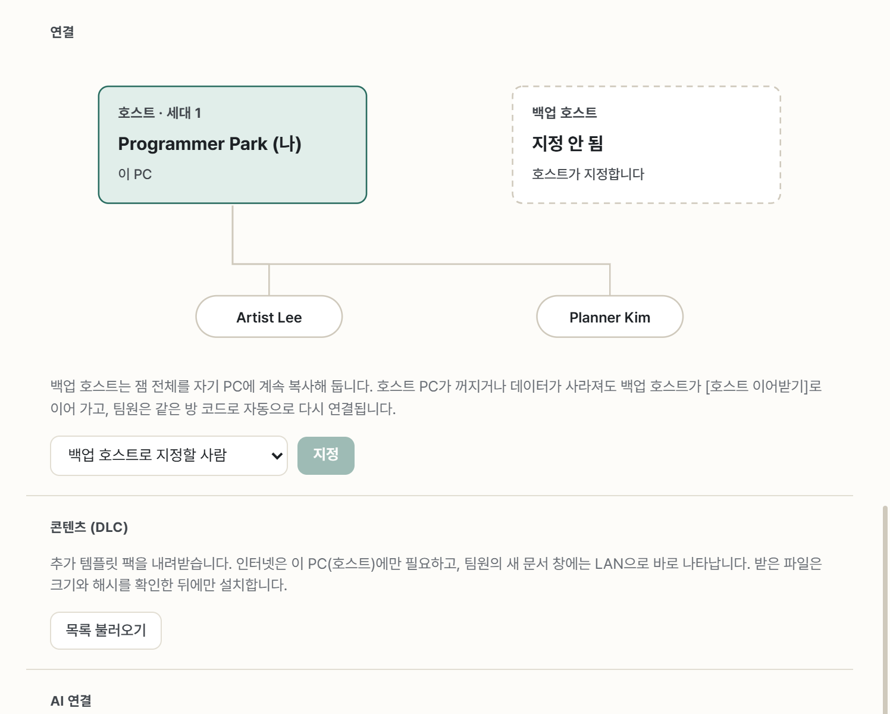
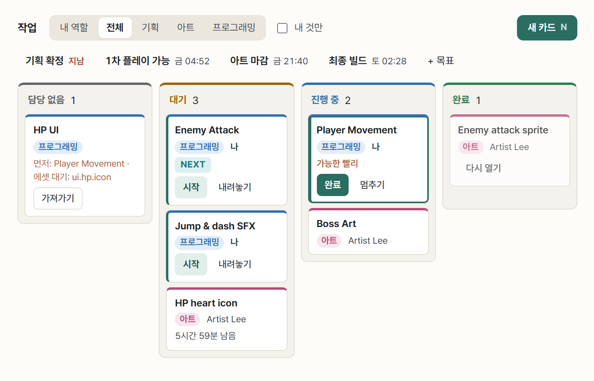
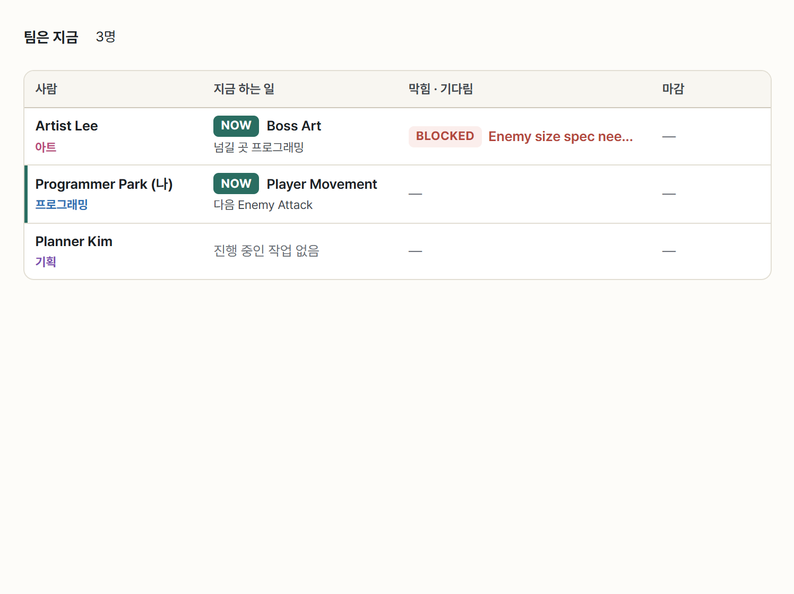
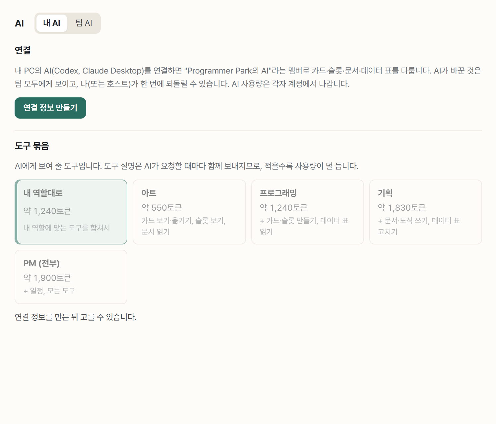
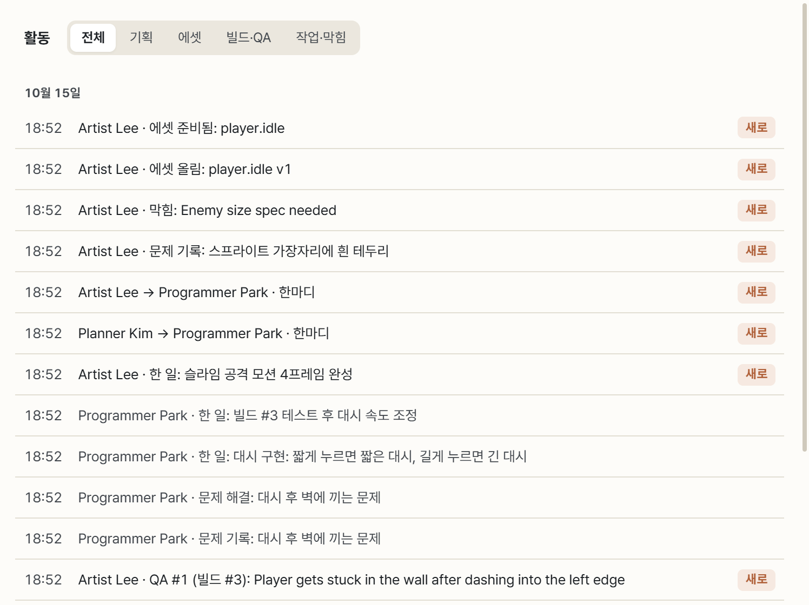

PM · 호스트
잼을 열고, 일정과 막힌 사람을 챙기고, 마지막에 팀의 결과와 포트폴리오를 한 폴더로 모읍니다. 보통 PM이 호스트를 맡습니다.
잼 열기 (도착 직후)
- 시작 화면 → 잼 열기: 팀 이름, 기간, 내 역할을 정하면 방 코드가 나옵니다.
- 호스트 PC는 절전 방지와 자동 백업을 켜고, Windows 네트워크가 ‘공용’이면 경고와 해결 방법을 보여 줍니다.
- 설정 → 연결에서 백업 호스트를 지정하세요. 호스트 PC가 꺼져도 같은 방 코드로 이어받습니다.
- 게임 이름이 정해지면 설정 → 호스트에서 붙입니다. 앱 상단에 ‘팀이름: 게임이름’으로 보입니다.
- 필요하면 설정 → 콘텐츠(DLC)에서 템플릿 팩을 받습니다. 인터넷은 호스트 PC만 필요합니다.


킥오프 → 계획
- 잼을 열면 3일짜리 기본 일정(기획 확정, 1차 플레이 가능, 아트 마감, 최종 빌드)이 생깁니다. 보드 위에서 고치세요.
- 회의록은 팀 운영 팩의 킥오프 회의록·역할 분담표·리스크 목록 템플릿에 적습니다. 현장에서 팀이 꾸려지면 24시간 AI 잼 팩의 현장 팀 빌딩 카드가 도움이 됩니다.
진행 관리 (잼 내내)
- 작업 보드의 전체에서 ‘담당 없음’은 배정하고, ‘대기’가 쌓인 사람은 일이 몰린 신호로 봅니다.
- 팀 화면에서 지금 하는 일, 자리 비움과 돌아올 시각, 막힘을 봅니다.
- Ctrl+클릭 핑으로 그 자리를 팀원 화면에 표시하고, Ctrl을 누른 채 움직이면 사람 호출 휠이 나옵니다.
- 활동은 자리를 비운 사이 바뀐 것을 묶어 보여 줍니다.




기획 변경 · 결정 관리
- 회의에서 바뀐 것은 기획 변경 기록으로 남깁니다. 영향받는 역할이 확인하고 ‘반영 완료’까지 따라갑니다.
- 범위를 줄일 때는 범위 줄이기 체크리스트, 위험한 일은 리스크 목록 시트로 관리합니다.
빌드 · QA 관리
- 올라온 빌드는 STABLE(플레이용) 또는 BROKEN(쓰지 말 것)으로 표시합니다.
- 1차 플레이 가능 시점에 팀 전원이 PLAY로 실행하고 Ctrl Shift Q로 보고하는 QA 시간을 진행하세요.
- 마감 직전 최종 빌드를 FINAL로 표시합니다.
AI 관리
- AI → 팀 AI에서 누가 AI를 연결했는지, 각 AI가 무엇을 바꿨는지 봅니다. 호스트는 어느 AI든 한 번에 되돌릴 수 있습니다.
- 잼 초반에 사용량 아끼기를 공유하세요. 일마다 새 대화, 작은 모델, 내 역할에 맞는 도구 묶음. 잼 도중 AI 사용량을 다 쓰면 끝까지 도움을 못 받습니다.


호스트 교대가 필요할 때
- 호스트 PC를 옮길 때는 설정 → 연결 → 호스트 넘기기. 팀원은 다시 참가할 필요 없이 새 호스트에 붙습니다.
- 호스트 PC가 갑자기 꺼지면 백업 호스트가 이어받기를 누릅니다.
마감
- 팀원들에게 크레딧(맡은 일)과 한마디를 남기도록 안내합니다.
- 설정 → 호스트 → 마감 내보내기로 요약, 문서, 데이터 표, 에셋 마지막 버전, 최종 빌드, 카드·QA 목록, 팀원 전원의 포트폴리오, 복원용 백업을 한 폴더로 모읍니다.
- 먼저 떠난 학생에게는 내보낸 폴더의
포트폴리오/이름/을 전해 주세요.
PM이 매일 보는 곳
| 궁금한 것 | 보는 곳 |
|---|---|
| 지금 누가 무엇을 하나? 막힌 사람은? | 팀 |
| 배정 안 된 일, 일이 몰린 사람은? | 작업 보드 → 전체 |
| 일정대로 가고 있나? | 보드 위 일정 |
| 자리 비운 사이 무슨 일이? | 활동 |
| 지금 플레이할 빌드는? 남은 큰 문제는? | 빌드(STABLE), QA(CRITICAL) |
| AI가 엉뚱한 걸 바꾸지 않았나? | AI → 팀 AI |

